This work was supported by the Mathematical, Information, and Computational Sciences Division subprogram of the Office of Computational and Technology Research, U.S. Department of Energy, under Contract W-31-109-Eng-38.
The Toolkit for Advanced Optimization (TAO) focuses on the development of algorithms and software for the solution of large-scale optimization problems on high-performance architectures. Areas of interest include nonlinear least squares, unconstrained and bound-constrained optimization, and general nonlinear optimization.
The development of TAO was motivated by the scattered support for parallel computations and the lack of reuse of external toolkits in current optimization software. Our aim is to use object-oriented techniques to produce high-quality optimization software for a range of computing environments ranging from serial workstations and laptops to massively parallel high-performance architectures. Our design decisions are strongly motivated by the challenges inherent in the use of large-scale distributed memory architectures and the reality of working with large, often poorly structured legacy codes for specific applications.
This manual describes the use of TAO. Since TAO is still under development, changes in usage and calling sequences may occur. TAO is fully supported; see the the web site http://www.mcs.anl.gov/tao for information on contacting the TAO developers.
The initial development of TAO was funded by the ACTS Toolkit Project in the Office of Advanced Scientific Computing Research, U.S. Department of Energy. We gratefully acknowledge their support.
TAO owes much to the developers of PETSc. We have benefitted from their experience, tools, software, and advice. In many ways, TAO is a natural outcome of the PETSc development. TAO has also benefitted from the work of various researchers who have provided solvers, test problems, and interfaces. In particular, we acknowledge
Finally, we thank all TAO users for their comments, bug reports, and encouragement.
The Toolkit for Advanced Optimization (TAO) focuses on the design and implementation of optimization software for the solution of large-scale optimization applications on high-performance architectures. Our approach is motivated by the scattered support for parallel computations and lack of reuse of linear algebra software in currently available optimization software. The TAO design allows the reuse of toolkits that provide lower-level support (parallel sparse matrix data structures, preconditioners, solvers), and thus we are able to build on top of these toolkits instead of having to redevelop code. The advantages in terms of efficiency and development time are significant.
The TAO design philosophy uses object-oriented techniques of data and state encapsulation, abstract classes, and limited inheritance to create a flexible optimization toolkit. This chapter provides a short introduction to our design philosophy by describing the objects in TAO and the importance of this design. Since a major concern in the TAO project is the performance and scalability of optimization algorithms on large problems, we also present some performance resuls.
The TAO design philosophy place strongs emphasis on the reuse of external tools where appropriate. Our design enables bidirectional connection to lower-level linear algebra support (e.g. parallel sparse matrix data structures) provided in toolkits such as PETSc [3] [4,2] as well as higher-level application frameworks. Our design decisions are strongly motivated by the challenges inherent in the use of large-scale distributed memory architectures and the reality of working with large and often poorly structured legacy codes for specific applications. Figure 1.1 illustrates how the TAO software works with external libraries and application code.
The TAO solvers use four fundamental objects to define and solve optimization problems: vectors, index sets, matrices, and linear solvers. The concepts of vectors and matrices are standard, while an index set refers to a set of integers used to identify particular elements of vectors or matrices. An optimization algorithm is a sequence of well defined operations on these objects. These operations include vector sums, inner products, and matrix-vector multiplication. TAO makes no assumptions about the representation of these objects by passing pointers to data-structure-neutral objects for the execution of these numerical operations.
With sufficiently flexible abstract interfaces, TAO can support a variety of implementations of data structures and algorithms. These abstractions allow us to more easily experiment with a range of algorithmic and data structure options for realistic problems, such as within this case study. Such capabilities are critical for making high-performance optimization software adaptable to the continual evolution of parallel and distributed architectures and the research community's discovery of new algorithms that exploit their features.
Our current TAO implementation uses the parallel system infrastructure and linear algebra objects offered by PETSc, which uses MPI [13] for all interprocessor communication. The PETSc package supports objects for vectors, matrices, index sets, and linear solvers.
The TAO design philosophy eliminates some of the barriers in using independently developed software components by accepting data that is independent of representation and calling sequence written for particular data formats. The user can initialize an application with external frameworks, provide function information to a TAO solver, and call TAO to solve the application problem.
The use of abstractions for matrices and vectors in TAO optimization software also enables us to leverage automatic differentiation technology to facilitate the parallel computation of gradients and Hessians needed within optimization algorithms. We have demonstrated the viability of this approach through preliminary interfacing between TAO solvers and the automatic differentiation tools ADIFOR and ADIC. We are currently working on developing TAO interfaces that use special problem features (for example, partial separability, stencil information) in automatic differentiation computations.
A major concern in the TAO project is the performance and scalability of optimization algorithms on large problems. In this section we focus on the GPCG (gradient projection, conjugate gradient) algorithm for the solution of bound-constrained convex quadratic programming problems. Originally developed by Moré and Toraldo [20], the GPCG algorithm was designed for large-scale problems but had only been implemented for a single processor. GPCG combines the advantages of the identification properties of the gradient projection method with the finite termination properties of the conjugate gradient method. Moreover, the performance of the TAO implementation on large optimization problems is noteworthy.
We illustrate the performance of the GPCG algorithm by
presenting results for a journal bearing problem
with over 2.5 million variables.
The journal bearing problem
is a finite element approximation to a variational problem
over a rectangular two-dimensional grid. A
grid with  points in each direction, for example, is formulated
as a bound constrained quadratic problem with
points in each direction, for example, is formulated
as a bound constrained quadratic problem with
 variables.
The triangulation of the grid results in a matrix that has the
usual five diagonal nonzero structure that arises
from a difference approximation to the Laplacian operator.
The journal bearing problem contains an eccentricity parameter,
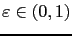, that influences the number of active
variables at the solution and the difficulty in solving it.
Figure 1.2 shows the solution of the journal bearing problem
for
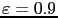. The steep gradient in the solution
makes this problem a difficult benchmark.
variables.
The triangulation of the grid results in a matrix that has the
usual five diagonal nonzero structure that arises
from a difference approximation to the Laplacian operator.
The journal bearing problem contains an eccentricity parameter,
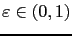, that influences the number of active
variables at the solution and the difficulty in solving it.
Figure 1.2 shows the solution of the journal bearing problem
for
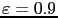. The steep gradient in the solution
makes this problem a difficult benchmark.
The performance results in Table 1.1 are noteworthy is several
ways. First of all, the number of faces visited by GPCG is remarkably
small. Other strategies can lead to a large number of gradient
projection iterates, but the GPCG algorithm is remarkably efficient.
Another interesting aspect of these results is that due to the low
memory requirements of iterative solvers, we were able to solve these
problems with only  processors. Strategies that rely on
direct solvers are likely to need significantly more storage, and thus
more processors. Finally, these results show that the GPCG
implementation has excellent efficiency. For example, the efficiency
of GPCG with respect to
processors. Strategies that rely on
direct solvers are likely to need significantly more storage, and thus
more processors. Finally, these results show that the GPCG
implementation has excellent efficiency. For example, the efficiency
of GPCG with respect to  processors ranges between
processors ranges between  and
and  when
when
 . This sustained efficiency
is remarkable since the GPCG algorithm is solving a sequence of linear
problems with a coefficient matrix set to the submatrix of the Hessian
matrix with respect to the free variables for the current iterate.
Thus, our implementation's repartitioning of submatrices effectively
deals with the load-balancing problem that is inherent in the GPCG
algorithm.
. This sustained efficiency
is remarkable since the GPCG algorithm is solving a sequence of linear
problems with a coefficient matrix set to the submatrix of the Hessian
matrix with respect to the free variables for the current iterate.
Thus, our implementation's repartitioning of submatrices effectively
deals with the load-balancing problem that is inherent in the GPCG
algorithm.
An important aspect of our results that is not apparent from Table 1.1 is that for these results we were able to experiment easily with all the preconditioners offered by PETSc. In particular, we were able to compare the diagonal Jacobi preconditioner with block Jacobi and overlapping additive Schwarz preconditioners that use a zero-fill ILU solver in each block. We also experimented with a parallel zero-fill incomplete Cholesky preconditioner provided by a PETSc interface to the BlockSolve95 [15] package of Jones and Plassmann. Interestingly enough, the diagonal Jacobi preconditioner achieved better performance on this problem.
TAO contains unconstrained minimization, bound constrained minimization, and nonlinear complementarity solvers. The structure of these problems can differ significantly, but TAO has a similar interface to all of its solvers. Routines that most solvers have in common will be discussed in this chapter. A complete list of options can be found by consulting the manual pages. Many of the options can also be set at the command line. These options can also be found in manual pages or by running a program with the -help option.
info = TaoInitialize(int *argc,char ***argv,char *file_name,
char *help_message);
This command initializes TAO, as well as MPI, PETSc, and other packages
to which TAO applications may link (if these have not yet
been initialized elsewhere).
In particular, the arguments argc and
argv are the command line arguments delivered in all C and C++
programs; these arguments initialize the options database.
The argument file_name
optionally indicates an alternative name for an options file, which by
default is called .petscrc and resides in the user's home directory.
One of the last routines that all TAO programs should call is
info = TaoFinalize();This routine finalizes TAO and any other libraries that may have been initialized during the TaoInitialize() phase. For example, TaoFinalize() calls MPI_Finalize() if TaoInitialize() began MPI. If MPI was initiated externally from TAO (by either the user or another software package), then the user is responsible for calling MPI_Finalize().
A TAO solver can be created with the command
info = TaoCreate(MPI_Comm comm,TaoMethod method,TAO_SOLVER *newsolver);The first argument in this routine is an MPI communicator indicating which processes are involved in the solution process. In most cases, this should be set to MPI_COMM_WORLD. The second argument in this creation routine specifies the default method that should be be used to solve the optimization problem. The third argument in TaoCreate() is a pointer to a TAO solver object. This routine creates the object and returns it to the user. The TAO object is then to be used in all TAO routines.
The various types of TAO solvers and the flags that identify them will be discussed in the following chapters. The solution method should be carefully chosen depending upon the problem that is being solved. Some solvers, for instance, are meant for problems with no constraints, while other solvers acknowledge constraints in the problem and solve them accordingly. The user must also be aware of the derivative information that is available. Some solvers require second-order information, while other solvers require only gradient or function information. The TaoMethod can also be set to TAO_NULL in the TaoCreate() routine if the user selects a method at runtime using the options database. The command line option -tao_method followed by an TAO method will override any method specified by the second argument. The command line option -tao_method tao_lmvm, for instance, will specify the limited memory variable metric method for unconstrained optimization. Note that the TaoMethod variable is a string that requires quotation marks in an application program, but quotation marks are not required at the command line. The method that TAO uses to solve an optimization problem can be changed at a later point in the program with the command TaoSetMethod(), whose arguments are a TAO solver and a string that uniquely identifies a method for solving the problem.
Each TAO solver that has been created should also be destroyed using the command
info = TaoDestroy(TAO_SOLVER solver);This routine frees the internal data structures used by the solver.
Although TAO and its solvers set default parameters that are useful for many problems, it may be necessary for the user to modify these parameters to change the behavior and convergence of various algorithms.
One convergence criterion for most algorithms concerns the
of digits of accuracy needed in the solution. In particular,
one convergence test employed by TAO attempts to stop when
the error in the constraints is less than
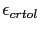,
and either
Other stopping criteria include a minimum trust region radius or a maximum number of iterations. These parameters can be set with the routines TaoSetTrustRegionTolerance() and TaoSetMaximumIterates(). Similarly, a maximum number of function evaluations can be set with the command TaoSetMaximumFunctionEvaluations() .
The routine
int TaoSolveApplication(TAO_APPLICATION, TAO_SOLVER);will apply the solver to the application that has been created by the user.
To see parameters and performance statistics for the solver, the routine
int TaoView(TAO_SOLVER);can be used. This routine will display to standard output the number of function evaluations need by the solver and other information specific to the solver.
The progress of the optimization solver can be monitored with the runtime option -tao_monitor. Although monitoring routines can be customized, the default monitoring routine will print out several relevant statistics to the screen.
The user also has access to information about the current solution. The current iteration number, objective function value, gradient norm, infeasibility norm, and step length can be retrieved with the command
int TaoGetSolutionStatus(TAO_SOLVER tao, int* iterate, double* f,
double* gnorm, double *cnorm, double *xdiff,
TaoTerminateReason *reason)
The last argument returns
a code that indicates the reason that the solver terminated. Positive
numbers indicate that a solution has been found, while negative numbers
indicate a failure. A list of reasons can be found in the manual page
for TaoGetTerminationReason().
The user set vectors containing the solution and gradient before solving the problem, but pointers to these vectors can also be retrieved with the commands TaoGetSolution() and TaoGetGradient(). Dual variables and other relevant information are also available. This information can be obtained during user-defined routines such as a function evaluation and customized monitoring routine, or after the solver has terminated.
Each solver has a set of options associated with it that can be set with command line arguments. A brief description of these algorithms and the associated options are discussed in this chapter.
This solver keeps a set of  sorted vectors
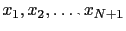 and their corresponding
objective function values
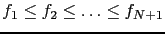. At each iteration,
sorted vectors
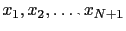 and their corresponding
objective function values
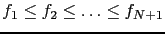. At each iteration,  is removed from
the set and replaced with
is removed from
the set and replaced with

where  can be one of
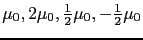 depending upon the values of
each possible
can be one of
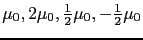 depending upon the values of
each possible  .
.
The algorithm terminates when the residual  becomes sufficiently small. Because of
the way new vectors can be added to the sorted set,
the minimum function value and/or the residual may not be impacted at each iteration.
becomes sufficiently small. Because of
the way new vectors can be added to the sorted set,
the minimum function value and/or the residual may not be impacted at each iteration.
There are two options that can be set specifically for the Nelder-Mead algorithm,
-tao_nm_lamda <value> sets the initial set of vectors ( plus
value in each cartesion direction), the default value is
plus
value in each cartesion direction), the default value is  .
tao_nm_mu <value> sets the value of
.
tao_nm_mu <value> sets the value of  ,
the default is 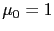.
,
the default is 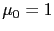.
The limited-memory, variable-metric method solves the system of equations
The primary factors determining the behavior of this algorithm are the
number of vectors stored for the Hessian approximation and the scaling matrix
used when computing the direction. The number of vectors stored can be set
with the command line argument -tao_lmm_vectors <int>;  is the
default
value. Increasing the number of vectors results in a better Hessian
approximation and can decrease the number of iterations required to compute
a solution to the optimization problem. However, as the number of vectors
increases, more memory is consumed and each direction calculation takes
longer to compute. Therefore, a trade off must be made between the
quality of the Hessian approximation, the memory requirements, and
the time to compute the direction.
is the
default
value. Increasing the number of vectors results in a better Hessian
approximation and can decrease the number of iterations required to compute
a solution to the optimization problem. However, as the number of vectors
increases, more memory is consumed and each direction calculation takes
longer to compute. Therefore, a trade off must be made between the
quality of the Hessian approximation, the memory requirements, and
the time to compute the direction.
During the computation of the direction, the inverse of an initial
Hessian approximation  is applied. The choice of
is applied. The choice of  has a significant impact on the quality of the direction obtained
and can result in a decrease in the number of function and gradient
evaluations required to solve the optimization problem. However,
the calculation of
has a significant impact on the quality of the direction obtained
and can result in a decrease in the number of function and gradient
evaluations required to solve the optimization problem. However,
the calculation of  at each iteration can have a significant
impact on the time required to update the limited-memory BFGS
approximation and the cost of obtaining the direction. By default,
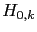 is a diagonal matrix obtained from the diagonal entries
of a Broyden approximation to the Hessian matrix. The calculation
of
at each iteration can have a significant
impact on the time required to update the limited-memory BFGS
approximation and the cost of obtaining the direction. By default,
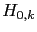 is a diagonal matrix obtained from the diagonal entries
of a Broyden approximation to the Hessian matrix. The calculation
of  can be modified with the command line argument
-tao_lmm_scale_type <none,scalar,broyden>. Each scaling
method is described below. The scalar and broyden
techniques are inspired by [].
can be modified with the command line argument
-tao_lmm_scale_type <none,scalar,broyden>. Each scaling
method is described below. The scalar and broyden
techniques are inspired by [].
An additional rescaling of the diagonal matrix can be applied to further improve performance when using the broyden scaling method. The rescaling method can be set with the command line argument -tao_lmm_rescale_type <none,scalar,gl>; scalar is the default rescaling method. The rescaling method applied can have a large impact on the number of function and gradient evaluations necessary to compute a solution to the optimization problem, but increases the time required to update the BFGS approximation. Each rescaling method is described below. These techniques are inspired by [].
Finally, a limit can be placed on the difference between the scaling matrix computed at this iteration and the previous value for the scaling matrix. The limiting type can be set with the command line argument -tao_lmm_limit_type <none,average,relative,absolute>; none is the default value. Each of these methods is described below when using the scalar scaling method. The techniques are the same when using the broyden scaling method, but are applied to each entry in the diagonal matrix.
The default values for the scaling are based on many tests using the unconstrained problems from the MINPACK-2 test set. These tests were used to narrow the choices to a few sets of values. These values were then run on the unconstrained problems from the CUTEr test set to obtain the default values supplied.
| Name | Value | Default | Description |
| -tao_lmm_vectors | int | 5 | Number of vectors for Hessian approximation |
| -tao_lmm_scale_type | none, scalar, broyden | broyden | Type of scaling method to use |
| -tao_lmm_scalar_history | int | 5 | Number of vectors to use when scaling |
| -tao_lmm_scalar_alpha | double | 1 | Value of |
| -tao_lmm_broyden_phi | double | 0.125 | Value of |
| -tao_lmm_rescale_type | none, scalar, gl | scalar | Type of rescaling method to use |
| -tao_lmm_rescale_history | int | 5 | Number of vectors to use when rescaling |
| -tao_lmm_rescale_alpha | double | 1 | Value of |
| -tao_lmm_rescale_beta | double | 0.5 | Value of |
| -tao_lmm_limit_type | none, average, relative, absolute | none | Type of limit to impose on scaling matrix |
| -tao_lmm_limit_mu | double | 1 | Value of |
| -tao_lmm_limit_nu | double | 100 | Value of 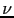 for limit type |
The nonlinear conjugate gradient method can be viewed as an extensions of the conjugate gradient method for solving symmetric, positive-definite linear systems of equations. This algorithm requires only function and gradient evaluations as well as a line search. The TAO implementation uses a Moré-Thuente line search to obtain the step length. The nonlinear conjugate gradient method can be selected by using the TaoMethod tao_cg. For the best efficiency, function and gradient evaluations should be performed simultaneously when using this algorithm.
Five variations are currently supported by the TAO implementation: the Fletcher-Reeves method, the Polak-Ribiére method, the Polak-Ribiére-Plus method[25], the Hestenes-Stiefel method, and the Dai-Yuan method. These conjugate gradient methods can be specified by using the command line argument tao_cg_type <fr,pr,prp,hs,dy>, respectively. The default value is prp.
The conjugate gradient method incorporates automatic restarts when successive
gradients are not sufficiently orthogonal. TAO measures the orthogonality by
dividing the inner product of the gradient at the current point and the
gradient at the previous point by the square of the Euclidean norm of
the gradient at the current point. When the absolute value of this
ratio is greater than  , the algorithm restarts using the gradient
direction. The parameter
, the algorithm restarts using the gradient
direction. The parameter  can be set using the command line argument
-tao_cg_eta <double>; 0.1 is the default value.
can be set using the command line argument
-tao_cg_eta <double>; 0.1 is the default value.
The Newton line-search method solves the symmetric system of equations
The system of equations is approximately solved by applying the conjugate gradient method, Steihaug-Toint conjugate gradient method, generalized Lanczos method, or an alternative Krylov subspace method supplied by PETSc. The method used to solve the systems of equations is specified with the command line argument -tao_nls_ksp_type <cg,stcg,gltr,petsc>; cg is the default. When the type is set to petsc, the method set with the PETSc -ksp_type command line argument is used. For example, to use GMRES as the linear system solver, one would use the the command line arguments -tao_nls_ksp_type petsc -ksp_type gmres. Internally, the PETSc implementations for the conjugate gradient methods and the generalized Lanczos method are used. See the PETSc manual for further information on changing the behavior of the linear system solvers.
A good preconditioner reduces the number of iterations required to solve the linear system of equations. For the conjugate gradient methods and generalized Lanczos method, this preconditioner must be symmetric and positive definite. The available options are to use no preconditioner, the absolute value of the diagonal of the Hessian matrix, a limited-memory BFGS approximation to the Hessian matrix, or one of the other preconditioners provided by the PETSc package. These preconditioners are specified by the command line argument -tao_nls_pc_type <none,ahess,bfgs,petsc>, respectively. The default is the bfgs preconditioner. When the preconditioner type is set to petsc, the preconditioner set with the PETSc -pc_type command line argument is used. For example, to use an incomplete Cholesky factorization for the preconditioner, one would use the command line arguments -tao_nls_pc_type petsc -pc_type icc. See the PETSc manual for further information on changing the behavior of the preconditioners.
The choice of scaling matrix can have a significant impact on the quality of the Hessian approximation when using the bfgs preconditioner and affect the number of iterations required by the linear system solver. The choices for scaling matrices are the same as those discussed for the limited-memory, variable-metric algorithm. For Newton methods, however, the option exists to use a scaling matrix based on the true Hessian matrix. In particular, the implementation supports using the absolute value of the diagonal of the Hessian matrix or the absolute value of the diagonal of the perturbed Hessian matrix. The scaling matrix to use with the bfgs preconditioner is set with the command line argument -tao_nls_bfgs_scale_type <bfgs,ahess,phess>; phess is the default. The bfgs scaling matrix is derived from the BFGS options. The ahess scaling matrix is the absolute value of the diagonal of the Hessian matrix. The phess scaling matrix is the absolute value of the diagonal of the perturbed Hessian matrix.
The perturbation  is added when the direction returned by the
Krylov subspace method is either not a descent direction, the Krylov method
diverged due to an indefinite preconditioner or matrix, or a direction of
negative curvature was found. In the two latter cases, if the step returned
is a descent direction, it is used during the line search. Otherwise, a
steepest descent direction is used during the line search. The perturbation
is decreased as long as the Krylov subspace method reports success and
increased if further problems are encountered. There are three cases:
initializing, increasing, and decreasing the perturbation. These cases
are described below.
is added when the direction returned by the
Krylov subspace method is either not a descent direction, the Krylov method
diverged due to an indefinite preconditioner or matrix, or a direction of
negative curvature was found. In the two latter cases, if the step returned
is a descent direction, it is used during the line search. Otherwise, a
steepest descent direction is used during the line search. The perturbation
is decreased as long as the Krylov subspace method reports success and
increased if further problems are encountered. There are three cases:
initializing, increasing, and decreasing the perturbation. These cases
are described below.
When using stcg or gltr to solve the linear systems of equation,
a trust-region radius need to be initialized and updated. This trust-region
radius limits the size of the step computed. The method for initializing
the trust-region radius is set with the command line argument
-tao_nls_init_type <constant,direction,interpolation>;
interpolation, which chooses an initial value based on the
interpolation scheme found in [5], is the default. This
scheme performs a number of function and gradient evaluations to determine
a radius such that the reduction predicted by the quadratic model along the
gradient direction coincides with the actual reduction in the nonlinear
function. The iterate obtaining the best objective function value is
used as the starting point for the main line-search algorithm. The
constant method initializes the trust-region radius by using
the value specified with the -tao_trust0 <double> command line
argument, where the default value is 100. The direction technique
solves the first quadratic optimization problem by using a standard
conjugate gradient method and initializes the trust-region to
 .
.
Finally, the method for updating the trust-region radius is set with the
command line argument
-tao_nls_update_type <step,reduction,interpolation>; step
is the default. The step method updates the trust-region
radius based on the value of 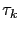. In particular,


| Name | Value | Default | Description |
| -tao_nls_ksp_type | cg, stcg, gltr, petsc | cg | Type of Krylov subspace method to use when solving linear system |
| -tao_nls_pc_type | none, ahess, bfgs, petsc | bfgs | Type of preconditioner to use when solving linear system |
| -tao_nls_bfgs_scale_type | ahess, phess, bfgs | phess | Type of scaling matrix to use with BFGS preconditioner |
| -tao_nls_sval | double | Initial perturbation value | |
| -tao_nls_imin | double | Minimum initial perturbation value | |
| -tao_nls_imax | double | Maximum initial perturbation value | |
| -tao_nls_imfac | double | Factor applied to norm of gradient when initializing perturbation | |
| -tao_nls_pmax | double | 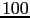 | Maximum perturbation when increasing value |
| -tao_nls_pgfac | double | 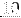 | Growth factor applied to perturbation when increasing value |
| -tao_nls_pmgfac | double | Factor applied to norm of gradient when increasing perturbation | |
| -tao_nls_pmin | double | Minimum perturbation when decreasing value; smaller values set to zero | |
| -tao_nls_psfac | double | Shrink factor applied to perturbation when decreasing value | |
| -tao_nls_pmsfac | double | Factor applied to norm of gradient when decreasing perturbation |
| Name | Value | Default | Description |
| -tao_nls_init_type | constant, direction, interpolation | interpolation | Method used to initialize trust-region radius when using stcg or gltr |
| -tao_nls_mu1_i | double | 0.35 | |
| -tao_nls_mu2_i | double | 0.50 | |
| -tao_nls_gamma1_i | double | 0.0625 | |
| -tao_nls_gamma2_i | double | 0.50 | 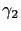 in interpolation init |
| -tao_nls_gamma3_i | double | 2.00 | |
| -tao_nls_gamma4_i | double | 5.00 | 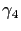 in interpolation init |
| -tao_nls_theta_i | double | 0.25 | |
| -tao_nls_update_type | step, reduction, interpolation | step | Method used to update trust-region radius when using stcg or gltr |
| -tao_nls_nu1 | double | 0.25 | 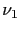 in step update |
| -tao_nls_nu2 | double | 0.50 | |
| -tao_nls_nu3 | double | 1.00 | 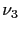 in step update |
| -tao_nls_nu4 | double | 1.25 | |
| -tao_nls_omega1 | double | 0.25 | 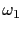 in step update |
| -tao_nls_omega2 | double | 0.50 | 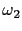 in step update |
| -tao_nls_omega3 | double | 1.00 | |
| -tao_nls_omega4 | double | 2.00 | |
| -tao_nls_omega5 | double | 4.00 | |
| -tao_nls_eta1 | double | ||
| -tao_nls_eta2 | double | 0.25 | 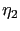 in reduction update |
| -tao_nls_eta3 | double | 0.50 | 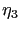 in reduction update |
| -tao_nls_eta4 | double | 0.90 | |
| -tao_nls_alpha1 | double | 0.25 | |
| -tao_nls_alpha2 | double | 0.50 | |
| -tao_nls_alpha3 | double | 1.00 | |
| -tao_nls_alpha4 | double | 2.00 | |
| -tao_nls_alpha5 | double | 4.00 | |
| -tao_nls_mu1 | double | 0.10 | |
| -tao_nls_mu2 | double | 0.50 | |
| -tao_nls_gamma1 | double | 0.25 | |
| -tao_nls_gamma2 | double | 0.50 | |
| -tao_nls_gamma3 | double | 2.00 | 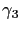 in interpolation update |
| -tao_nls_gamma4 | double | 4.00 | |
| -tao_nls_theta | double | 0.05 |
The Newton trust-region method solves the constrained quadratic programming
problem

The quadratic optimization problem is approximately solved by applying
the Steihaug-Toint conjugate gradient method or generalized Lanczos
method to the symmetric system of equations  . The method
used to solve the system of equations is specified with the command line
argument -tao_ntr_ksp_type <stcg,gltr>; stcg is the default.
Internally, the PETSc implementations for the Steihaug-Toint method and the
generalized Lanczos method are used. See the PETSc manual for further
information on changing the behavior of these linear system solvers.
. The method
used to solve the system of equations is specified with the command line
argument -tao_ntr_ksp_type <stcg,gltr>; stcg is the default.
Internally, the PETSc implementations for the Steihaug-Toint method and the
generalized Lanczos method are used. See the PETSc manual for further
information on changing the behavior of these linear system solvers.
A good preconditioner reduces the number of iterations required to compute the direction. For the Steihaug-Toint conjugate gradient method and generalized Lanczos method, this preconditioner must be symmetric and positive definite. The available options are to use no preconditioner, the absolute value of the diagonal of the Hessian matrix, a limited-memory BFGS approximation to the Hessian matrix, or one of the other preconditioners provided by the PETSc package. These preconditioners are specified by the the command line argument -tao_ntr_pc_type <none,ahess,bfgs,petsc>, respectively. The default is the bfgs preconditioner. When the preconditioner type is set the to petsc, the preconditioner set with the PETSc -pc_type command line argument is used. For example, to use an incomplete Cholesky factorization for the preconditioner, one would use the command line arguments -tao_ntr_pc_type petsc -pc_type icc. See the PETSc manual for further information on changing the behavior of the preconditioners.
The choice of scaling matrix can have a significant impact on the quality of the Hessian approximation when using the bfgs preconditioner and affect the number of iterations required by the linear system solver. The choices for scaling matrices are the same as those discussed for the limited-memory, variable-metric algorithm. For Newton methods, however, the option exists to use a scaling matrix based on the true Hessian matrix. In particular, the implementation supports using the absolute value of the diagonal of the Hessian matrix. The scaling matrix to use with the bfgs preconditioner is set with the command line argument -tao_ntr_bfgs_scale_type <ahess,bfgs>; ahess is the default. The bfgs scaling matrix is derived from the BFGS options. The ahess scaling matrix is the absolute value of the diagonal of the Hessian matrix.
The method for computing an initial trust-region radius is set with the
command line argument -tao_ntr_init_type <constant,direction,interpolation>;
interpolation, which chooses an initial value based on the
interpolation scheme found in [5], is the default. This
scheme performs a number of function and gradient evaluations to determine
a radius such that the reduction predicted by the quadratic model along the
gradient direction coincides with the actual reduction in the nonlinear
function. The iterate obtaining the best objective function value is
used as the starting point for the main line-search algorithm. The
constant method initializes the trust-region radius by using
the value specified with the -tao_trust0 <double> command line
argument, where the default value is 100. The direction technique
solves the first quadratic optimization problem by using a standard
conjugate gradient method and initializes the trust-region to
 .
.
Finally, the method for updating the trust-region radius is set with the
command line argument
-tao_ntr_update_type <reduction,interpolation>; reduction
is the default. The reduction method computes the ratio of the
actual reduction in the objective function to the reduction predicted
by the quadratic model for the full step,
 , where
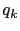 is the quadratic model. The radius is then updated as:
, where
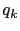 is the quadratic model. The radius is then updated as:

| Name | Value | Default | Description |
| -tao_ntr_ksp_type | stcg, gltr | stcg | Type of Krylov subspace method to use when solving linear system |
| -tao_ntr_pc_type | none, ahess, bfgs, petsc | bfgs | Type of preconditioner to use when solving linear system |
| -tao_ntr_bfgs_scale_type | ahess, bfgs | ahess | Type of scaling matrix to use with BFGS preconditioner |
| -tao_ntr_init_type | constant, direction, interpolation | interpolation | Method used to initialize trust-region radius |
| -tao_ntr_mu1_i | double | 0.35 | |
| -tao_ntr_mu2_i | double | 0.50 | |
| -tao_ntr_gamma1_i | double | 0.0625 | in interpolation init |
| -tao_ntr_gamma2_i | double | 0.50 | |
| -tao_ntr_gamma3_i | double | 2.00 | |
| -tao_ntr_gamma4_i | double | 5.00 | |
| -tao_ntr_theta_i | double | 0.25 | in interpolation init |
| -tao_ntr_update_type | reduction, interpolation | reduction | Method used to update trust-region radius |
| -tao_ntr_eta1 | double | ||
| -tao_ntr_eta2 | double | 0.25 | |
| -tao_ntr_eta3 | double | 0.50 | |
| -tao_ntr_eta4 | double | 0.90 | 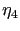 in reduction update |
| -tao_ntr_alpha1 | double | 0.25 | 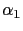 in reduction update |
| -tao_ntr_alpha2 | double | 0.50 | |
| -tao_ntr_alpha3 | double | 1.00 | |
| -tao_ntr_alpha4 | double | 2.00 | |
| -tao_ntr_alpha5 | double | 4.00 | |
| -tao_ntr_mu1 | double | 0.10 | |
| -tao_ntr_mu2 | double | 0.50 | |
| -tao_ntr_gamma1 | double | 0.25 | |
| -tao_ntr_gamma2 | double | 0.50 | |
| -tao_ntr_gamma3 | double | 2.00 | |
| -tao_ntr_gamma4 | double | 4.00 | |
| -tao_ntr_theta | double | 0.05 |
Bound constrained optimization algorithms
minimize
 , subject to upper or
lower bounds on some of the variables.
These solvers also bounds on the variables as well as objective
function, gradient, and possibly Hessian information.
, subject to upper or
lower bounds on some of the variables.
These solvers also bounds on the variables as well as objective
function, gradient, and possibly Hessian information.
The TRON algorithm solves a reduced linear system defined by the rows and columns corresponding to the variables that lie between the upper and lower bounds. When running in parallel, these rows can either remain on their current processor or be redistributed evenly over all of the processors with the command TaoSelectSubset(). The TRON algorithm applies a trust region to the conjugate gradients to ensure convergence. The initial trust region can be set using the command TaoSetTrustRegionRadius() and the current trust region size can be found using the command TaoGetTrustRegionRadius(). The initial trust region can significantly alter the rate of convergence for the algorithm and should be tuned and adjusted for optimal performance.
This method is the bound constrained variant of the LMVM method for unconstrained optimization. It uses projected gradients to approximate the Hessian - eliminating the need for Hessian evaluations. The method can be set using TaoMethod tao_blmvm. The command TaoLMVMSetSize(), which sets the number of vectors to be used in the Hessian approximation, also applies to this method.
This method calculates points satisfying the first-order necessary optimality conditions. The method uses the mixed complementarity problem solvers from Section 4.3 to calculate the solutions. The choice of complementarity solver is specified with the runtime option -tao_kt_method with the default being the tao_ssils method.
Mixed complementarity problems, or box-constrained variational inequalities,
are related to nonlinear systems of equations. They are defined by a
continuously differentiable function,
 , and bounds,
, and bounds,
 and
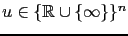, on the variables such that
. Given this information,
is a solution to
MCP(
and
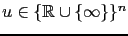, on the variables such that
. Given this information,
is a solution to
MCP( , , ) if for each
, , ) if for each
 we have at
least one of the following:
we have at
least one of the following:
Simple complementarity conditions arise from the first-order optimality
conditions from optimization [16,17].
In the simple bound constrained optimization case, these conditions
correspond to MCP( ,
,  ,
,  ), where
is the objective function. In a one-dimensional setting these conditions
are intuitive. If the solution is at the lower bound, then the function must
be increasing and
. However, if the solution is at the
upper bound, then the function must be decreasing and
.
Finally, if the solution
is strictly between the bounds, we must be at a stationary point and
), where
is the objective function. In a one-dimensional setting these conditions
are intuitive. If the solution is at the lower bound, then the function must
be increasing and
. However, if the solution is at the
upper bound, then the function must be decreasing and
.
Finally, if the solution
is strictly between the bounds, we must be at a stationary point and
 . Other complementarity problems arise in economics and
engineering [9], game
theory [23], and finance [14].
. Other complementarity problems arise in economics and
engineering [9], game
theory [23], and finance [14].
Evaluation routines for  and its Jacobian must be supplied prior
to solving the application.
The bounds, , on the variables must also be
provided.
If no starting point is supplied, a default starting point of all zeros
is used.
and its Jacobian must be supplied prior
to solving the application.
The bounds, , on the variables must also be
provided.
If no starting point is supplied, a default starting point of all zeros
is used.
TAO has two implementations of semismooth algorithms [22,7,8] for solving mixed complementarity problems. Both are based upon a reformulation of the mixed complementarity problem as a nonsmooth system of equations using the Fischer-Burmeister function [10]. A nonsmooth Newton method is applied to the reformulated system to calculate a solution. The theoretical properties of such methods are detailed in the aforementioned references.
The Fischer-Burmeister function,
 , is defined as,
, is defined as,

The two semismooth TAO solvers both solve the system  by applying
a nonsmooth newton method with a line-search. We calculate a direction,
by applying
a nonsmooth newton method with a line-search. We calculate a direction,  ,
by solving the system
where is an element of the
-subdifferential [27] of at . If the
direction calculated does not satisfy a suitable descent condition, then
we use the negative gradient of the merit function,
,
by solving the system
where is an element of the
-subdifferential [27] of at . If the
direction calculated does not satisfy a suitable descent condition, then
we use the negative gradient of the merit function,
 , as
the search direction. A standard Armijo search [1] is
used to find the new iteration. Non-monotone searches
[11] are also available by setting
appropriate run-time options. See Section 6.2 for further
details.
, as
the search direction. A standard Armijo search [1] is
used to find the new iteration. Non-monotone searches
[11] are also available by setting
appropriate run-time options. See Section 6.2 for further
details.
The first semismooth algorithm available in TAO is not guaranteed to
remain feasible with respect to the bounds,  , and is termed
an infeasible semismooth method. This method can be specified using the
TaoMethod tao_ssils. In this case, the descent test used is
that
, and is termed
an infeasible semismooth method. This method can be specified using the
TaoMethod tao_ssils. In this case, the descent test used is
that
An alternative is to remain feasible with respect to the bounds by using a
projected Armijo line-search. This method can be specified using the
TaoMethod tao_ssfls. The descent test used is the same as above
where the direction in this case corresponds to the first part of the
piece-wise linear arc searched by the projected line-search.
Both  and
and  can be modified using the run-time
commands -tao_ssfls_delta <delta> and -tao_ssfls_rho <rho>
respectively. By default,
can be modified using the run-time
commands -tao_ssfls_delta <delta> and -tao_ssfls_rho <rho>
respectively. By default,
 and
and  .
.
The recommended algorithm is the infeasible semismooth method,
tao_ssils, because of its strong global and local convergence
properties. However, if it is known that  is not defined outside
of the box,
is not defined outside
of the box,  , perhaps due to the presence of functions,
the feasible algorithm, tao_ssfls, is a reasonable alternative.
, perhaps due to the presence of functions,
the feasible algorithm, tao_ssfls, is a reasonable alternative.
The solvers in TAO address applications that have a set of variables, an objective function, and constraints on the variables. Many solvers also require derivatives of the objective and constraint functions. To use the TAO solvers, the application developer must define a set of variables, implement routines that evaluate the objective function and constraint functions, and pass this information to a TAO application object.
TAO uses vector and matrix objects to pass this information from the
application to the solver. The set of variables, for instance, is
represented in a vector.
The gradient of an objective function
 ,
evaluated at a point, is also represented as a vector.
Matrices, on the other hand,
can be used to represent the Hessian of
,
evaluated at a point, is also represented as a vector.
Matrices, on the other hand,
can be used to represent the Hessian of  or the Jacobian of a constraint
function
or the Jacobian of a constraint
function
 . The TAO solvers use
these objects to compute a solution to the application.
. The TAO solvers use
these objects to compute a solution to the application.
The PETSc package provides parallel and serial implementations of these objects and offers additional tools intended for high-performance scientific applications. The Vec and Mat types in PETSc represent the vectors and matrices in a TAO application. This chapter will describe how to create these an application object and give it the necessary properties. This chapter will also describe how to use the TAO solvers in conjunction with this application object.
TAO applications written in C/C++ should have the statement
#include "tao.h"in each file that uses a routine in the TAO libraries. All of the required lower level include files such as ``tao_solver.h'' and ``taoapp.h'' are automatically included within this high-level file.
TaoApplicationCreate(MPI_Comm, TAO_APPLICATION*);Much like creating PETSc vector and matrix objects, the first argument is an MPI communicator. An MPI [13] communicator indicates a collection of processors that will be used to evaluate the objective function, compute constraints, and provide derivative information. When only one processor is being used, the communicator MPI_COMM_SELF can be used with no understanding of MPI. Even parallel users need to be familiar with only the basic concepts of message passing and distributed-memory computing. Most applications running TAO in parallel environments can employ the communicator MPI_COMM_WORLD to indicate all processes in a given run.
The second argument is the address of a TAO_APPLICATION variable. This routine will create a new application object and set the variable, which is a pointer, to the address of the object. This application variable can now be used by the developer to define the application and by the TAO solver to solve the application.
Elsewhere in this chapter, the TAO_APPLICATION variable will be referred to as the application object.
After solving the application, the command
TaoAppDestroy(TAO_APPLICATION);will destroy the application object and free the work space associated with it.
In all of the optimization solvers, the application must provide a Vec object of appropriate dimension to represent the variables. This vector will be cloned by the solvers to create additional work space within the solver. If this vector is distributed over multiple processors, it should have a parallel distribution that allows for efficient scaling, inner products, and function evaluations. This vector can be passed to the application object using the routine
TaoAppSetInitialSolutionVec(TAO_APPLICATION,Vec);When using this routine, the application should initialize the vector with an approximate solution of the optimization problem before calling the TAO solver. If you do not know of a solution that that can be used, the routine TaoAppSetDefaultSolutionVec(TAO_APPLICATION,Vec); can be used to declare variables that will in be set to zero or some other default solution.
This vector will be used by the TAO solver to store the solution. Elsewhere in the application, this solution vector can be retieved from the application object using the routine
TaoAppGetSolutionVec(TAO_APPLICATION, Vec *);This routine takes the address of a Vec in the second argument and sets it to the solution vector used in the application.
For example, a routine that evaluates an objective function may need parameters, work vectors, and other information. This information, which may be specific to an application and necessary to evaluate the objective, can be collected in a single structure and used as one of the arguments in the routine. The address of this structure will be cast as type (void*) and passed to the routine in the final argument. There are many examples of these structures in the TAO distribution.
This technique offers several advantages. In particular, it allows for a uniform interface between TAO and the applications. The fundamental information needed by TAO appears in the arguments of the routine, while data specific to an application and its implementation is confined to an opaque pointer. The routines can access information created outside the local scope without the use of global variables. The TAO solvers and application objects will never access this structure, so the application developer has complete freedom to define it. In fact, these contexts are completely optional - a NULL pointer can be used.
TAO solvers that minimize an objective function require the application to evaluate the objective function. Some solvers may also require the application to evaluate derivatives of the objective function. Routines that perform these computations must be identified to the application object and must follow a strict calling sequence.
Routines that evaluate an objective function
 ,
should follow the form:
,
should follow the form:
EvaluateObjective(TAO_APPLICATION,Vec,double*,void*);The first argument is the application object, the second argument is the -dimensional vector that identifies where the objective should be evaluated, and the fourth argument is an application context. This routine should use the third argument to return objective value, evaluated at the given point specified the by the vector in the second argument.
This routine, and the application context, should be passed to the application object using the routine
TaoAppSetObjectiveRoutine(TAO_APPLICATION,
int(*)(TAO_APPLICATION,Vec,double*,void*),
void*);
The first argument in this routine is the application object,
the second argument is a function pointer to the routine that
evaluates the objective, and the third
argument is the pointer an appropriate application context.
Although final argument may point to anything, it must be cast as a (void*) type. This pointer will be passed back to the developer in the fourth argument of the routine that evaluates the objective. In this routine, the pointer can be cast back to the appropriate type. Examples of these structures and there usage are provides in the distribution.
Most TAO solvers also require gradient information from the application . The gradient of the objective function can be specified in a similar manner. Routines that evaluate the gradient should have the calling sequence
EvaluateTheGradient(TAO_APPLICATION,Vec,Vec,void*);In this routine, the first argument is the application object, the second argument is the variable vector, the third argument is the gradient, and the fourth argument is the user-defined application context. Only the third argument in this routine is different from the arguments in the routine that evaluates the objective function. The numbers in the gradient vector have no meaning when passed into this routine, but should represent the gradient of the objective at the specified point at the end of the routine. This routine, and the user-defined pointer, can be passed to the application object using the routine:
TaoAppSetGradientRoutine(TAO_APPLICATION,
int (*)(TAO_APPLICATION,Vec,Vec,void*),
void *);
In this routine, the first argument is the application object, the second argument
is the function pointer, and the third object is the application context, cast
to (void*).
Instead of evaluating the objective and its gradient in separate routines, TAO also allows the user to evaluate the function and the gradient at the same routine. In fact, some solvers are more efficient when both function and gradient information can be computed in the same routine. These routines should follow the form
EvaluateFunctionGradient(TAO_APPLICATION,Vec,double*,Vec,void*);where the first argument is the TAO solver, and the second argument points to the input vector for use in evaluating the function and gradient. The third argument should return the function value, while the fourth argument should return the gradient vector, and the fifth argument is a pointer to a user-defined context. This context and the name of the routine should be set with the call:
TaoAppSetObjectiveAndGradientRoutine(TAO_APPLICATION,
int (*)(TAO_APPLICATION,Vec,double*,Vec,void*),
void *);
The arguments of this routine are the TAO application, a
function name, and a pointer to a user-defined context.
The TAO example problems demonstrate the use of these application contexts as well as specific instances of function, gradient, and Hessian evaluation routines. All of these routines should return the integer after successful completion and a nonzero integer if the function is undefined at that point or an error occurred.
Some optimization routines also require a Hessian matrix from the user. The routine that evaluates the Hessian should have the form:
EvaluateTheHessian(TAO_APPLICATION,Vec,Mat*,Mat*,MatStructure*,void*);The first argument of this routine is a TAO application. The second argument is the point at which the Hessian should be evaluated. The third argument is the Hessian matrix, and the sixth argument is a user-defined context. Since the Hessian matrix is usually used in solving a system of linear equations, a preconditioner for the matrix is often needed. The fourth argument is the matrix that will be used for preconditioning the linear system. In most cases, this matrix will be the same as the Hessian matrix. The fifth argument is the flag used to set the Hessian matrix and linear solver in the routine KSPSetOperators().
One can set the Hessian evaluation routine by calling
int TaoAppSetHessianRoutine(TAO_APPLICATION,
int (*)(TAO_APPLICATION,Vec,Mat*,Mat*,MatStructure*,void*),
void *)
The first argument is the TAO application, the second
argument is the function that evaluates the Hessian,
and the third argument is a pointer to a user defined context,
cast as a void* pointer.
For solvers that evaluate the Hessian, the matrices used to store the Hessian should be set using
TaoAppSetHessianMat(TAO_APPLICATION,Mat,Mat);The first argument is the TAO application, the second argument is the Hessian matrix, and the third argument is the preconditioning matrix. In most applications, these two matrices will be the same structure.
TaoAppDefaultComputeGradient(TAO_APPLICATION, Vec, Vec, void*);,
TaoAppDefaultComputeHessian( TAO_APPLICATION, Vec, Mat*, Mat*,
MatStructure*, void*);
and
TaoAppDefaultComputeHessianColor( TAO_APPLICATION, Vec, Mat*, Mat*,
MatStructure*, void* );
These routines can be set using TaoAppSetGradientRoutine() and
TaoAppSetHessianRoutine() or through the options database.
If finite differencing is used with coloring, the routine
TaoAppSetColoring(TAO_APPLICATION, ISColoring);should be used to specify the coloring.
It is also possible to use finite difference approximations to directly check the correctness of an application's gradient and/or Hessian evaluation routines. This can be done using the special TAO solver tao_fd_test together with the options -tao_test_gradient or -tao_test_hessian.
Some optimization problems also impose constraints upon the variables. The constraints may impose simple bounds upon the variables, or require that the variables satisfy a set of linear or nonlinear equations.
The simplest type of constraint upon an optimization problem puts lower or upper bounds upon the variables. Vectors that represent lower and upper bounds for each variable can be set with the command
TaoAppSetVariableBoundsRoutine(TAO_APPLICATION,
int (*)(TAO_APPLICATION, Vec,Vec,void*),void *);
The first vector and second vectors should contain the lower and upper
bounds, respectively.
When no upper or lower bound exists for a variable, the bound
may be set to TAO_INFINITY or TAO_NINFINITY.
After the two bound vectors have been set, they may be accessed with the
with the command TaoGetApplicationVariableBounds().
Since not all solvers use bounds on variables, the user must be careful
to select a type of solver that acknowledges these bounds.
Constraints in the form of nonlinear equations have the form where . These constraints should be specified in a routine, written by the user, that evaluates C(X). The routine that evaluates the constraint equations should have the form:
int EqualityConstraints(TAO_APPLICATION,Vec,Vec,void*);The first argument of this routine is a TAO application object. The second argument is the variable vector at which the constraint function should be evaluated. The third argument is the vector of function values C, and the fourth argument is a pointer to a user-defined context. This routine and the user-defined context should be set in the TAO solver with the command
TaoAppSetConstraintRoutine(TAO_APPLICATION,
int (*)(TAO_APPLICATION,Vec,Vec,void*),
void*);
In this function, first argument is the TAO application,
the second argument is vector in which to store the function values,
and the third argument is a pointer to a user-defined context that will
be passed back to the user.
The Jacobian of the function C is the matrix in
 such that each column contains the partial derivatives of f with respect
to one variable.
The evaluation of the Jacobian of f should be performed in a routine
of the form
such that each column contains the partial derivatives of f with respect
to one variable.
The evaluation of the Jacobian of f should be performed in a routine
of the form
int J(TAO_APPLICATION,Vec,Mat*,Mat*,MatStructure*,void*);In this function, the second argument is the variable vector at which to evaluate the Jacobian matrix, the third argument is the Jacobian matrix, and the sixth argument is a pointer to a user-defined context. This routine should be specified using
TaoAppSetJacobianRoutine(TAO_APPLICATION,Mat,
int (*)(TAO_APPLICATION,Vec,Mat*,Mat*, MatStructure*,void*),
void*);
The first argument is the TAO application, the second
argument is the matrix in which the information can be stored,
the third argument is the function pointer, and the fourth argument is
an optional user-defined context.
The Jacobian matrix should be created in a way such that the product of
it and the variable vector can be put in the constraint vector.
For solvers that evaluate the Jacobian, the matrices used to store the Jacobian should be set using
TaoAppSetJacobianMat(TAO_APPLICATION,Mat,Mat);The first argument is the TAO application, the second argument is the Jacobian matrix, and the third argument is the preconditioning matrix. In most applications, these two matrices will be the same structure.
By default the TAO solvers run silently without displaying information about the iterations. The user can initiate monitoring with the command
int TaoSetMonitor(TAO_SOLVER solver,
int (*mon)(TAO_SOLVER tao,void* mctx),
void *mctx);
The routine, mon indicates a user-defined monitoring routine and mctx denotes an optional user-defined context for private data for the monitor routine.
The routine set by TaoAppSetMonitor() is called once during each iteration of the optimization solver. Hence, the user can employ this routine for any application-specific computations that should be done after the solution update. .
TaoAppSetMonitor(TAO_APPLICATION,
int (*)(TAO_APPLICATION,void*),void *);
TaoAppGetKSP(TAO_APPLICATION, KSP *);
With access to the KSP object, users can customize it for their application to achieve additional performance.
Once the TAO solver and TAO application object have been created and customized, they can be matched with one another using the routine
TaoSetupApplicationSolver( TAO_APPLICATION, TAO_SOLVER);This routine will set up the TAO solver for the application. Different solvers may set up differently, but they typically create the work vectors and linear solvers needed to find a solution. These structures were not created during the creation of the solver because the size of the application was not known. After calling this routine the routine TaoAppGetTaoSolver() can be used to obtain the TAO solver object. If not called directly by the application, TaoSetupApplicationSolver() will be executed inside of the subroutine TaoSolveApplication().
TaoGetGradientVec( TAO_SOLVER, Vec*);will set a pointer to a Vec to the vector object containing the gradient vector and the routine
TaoGetVariableBoundVecs( TAO_SOLVER, Vec*, Vec*);will set the pointers to the lower and upper bounds on the variables - if they exist. These vectors may be viewed at before, during, and after the solver is running.
Options for the application and solver can be be set from the command line using the routine
TaoSetOptions( TAO_APPLICATION, TAO_SOLVER);This routine will call TaoSetupApplicationSolver() if it has not been called already. This command also provides information about runtime options when the user includes the -help option on the command line.
Once the application and solver have been set up, the solver can be called using the routine
TaoSolveApplication( TAO_APPLICATION, TAO_SOLVER);This routine will call the TAO solver. If the routine TaoSetupApplicationSolver() has not already been called, this routine will call it.
After a solution has been found, the routine
TaoCopyDualsOfVariableBounds( TAO_APPLICATION, Vec, Vec );can compute the dual values of the variables bounds and copy them into the vectors passed into this routine.
Occasionally TAO users will have to interact directly with the linear algebra objects used by the solvers. Solvers within TAO use vector, matrix, index set, and linear solver objects that have no native data structures. Instead they have methods whose implementation is uses structures and routines provided by PETSc or other external software packages.
Given a PETSc Vec object X, the user can create a TaoVec object. By declaring the variables
TaoVec *xx;the routine
TaoWrapPetscVec(Vec,TaoVec **);takes the Vec x and creates and sets TaoVec *xx equal to a new TaoVec object. This object actually has the derived type TaoVecPetsc. Given a TaoVec whose underlying representation is a PETSc Vec, the command
TaoVecGetPetscVec( TaoVec *, Vec *);will retrieve the underlying vector. The routine TaoVecDestroy() will destroy the TaoVec object, but the Vec object must also be destroyed.
TaoWrapPetscMat(Mat,TaoMat **);takes the Mat H and creates and sets TaoMat *HH equal to the new TaoMat object. The second argument specifies whether the Mat object should be destroyed when the TaoVec object is destroy. This object actually has the derived type TaoMatPetsc. Given a TaoMat whose underlying representation is a PETSc Vec, the command
TaoMatGetPetscMat( TaoMat *, Mat *);will retrieve the underlying matrix. The routine TaoMatDestroy() will destroy the TaoMat object, but the Mat object must also be destroyed.
TaoWrapKSP( KSP, TaoLinearSolver **);takes a KSP object and creates a TaoLinearSolver object. The
TaoLinearSolverGetKSP( TaoLinearSolver *, KSP *);gets the underlying KSP object from the TaoLinearSolver object.
For index sets, the routine
TaoWrapPetscIS( IS, int, TaoIndexSet **);creates a TaoIndexSet object. In this routine, however, the second argument is the local size of the vectors that this object will describe. For instance, this object may describe with elements of a vector are positive. The second argument should be be local length of the vector. The IS object will be destroyed when the TaoIndexSet is destroyed. The routine
TaoIndexSetGetPetscIS( TaoIndexSet *, IS *);will return the underlying IS object.
Portable TAO makefiles follow the rules and definitions of PETSc makefiles. In Figures 5.1 we present a sample makefile.
This small makefile is suitable for maintaining a single program that uses the TAO library. The most important line in this makefile is the line starting with include:
include ${TAO_DIR}/bmake/tao_common
This line includes other makefiles that provide the needed definitions
and rules for the particular base software installations (specified by
${TAO_DIR} and ${PETSC_DIR}) and architecture
(specified by ${PETSC_ARCH}), which are typically set as
environmental variables prior to compiling TAO source or programs. As
listed in the sample makefile, the appropriate include file is
automatically completely specified; the user should not alter
this statement within the makefile.
TAO applications using PETSc should be linked with the to the PETSC_SNES_LIB library as well as the TAO_LIB library. This version uses PETSc 3.1, and the PETSC_DIR variable should be set accordingly. Many examples of makefiles can be found in the examples directories.
Most of the functionality of TAO can be obtained by people who program purely in Fortran 77 or Fortran 90. Note, however, that we recommend the use of C and/or C++ because these languages contain several extremely powerful concepts that the Fortran77/90 family does not. The TAO Fortran interface works with both F77 and F90 compilers.
Since Fortran77 does not provide type checking of routine input/output parameters, we find that many errors encountered within TAO Fortran programs result from accidentally using incorrect calling sequences. Such mistakes are immediately detected during compilation when using C/C++. Thus, using a mixture of C/C++ and Fortran often works well for programmers who wish to employ Fortran for the core numerical routines within their applications. In particular, one can effectively write TAO driver routines in C++, thereby preserving flexibility within the program, and still use Fortran when desired for underlying numerical computations.
Only a few differences exist between the C and Fortran TAO interfaces, all of which are due to differences in Fortran syntax. All Fortran routines have the same names as the corresponding C versions, and command line options are fully supported. The routine arguments follow the usual Fortran conventions; the user need not worry about passing pointers or values. The calling sequences for the Fortran version are in most cases identical to the C version, except for the error checking variable discussed in Section 5.14.2. In addition, the Fortran routine TaoInitialize(char *filename,int info) differs slightly from its C counterpart; see the manual page for details.
Currently, TAO users must employ the Fortran file suffix .F rather than .f. This convention enables use of the CPP preprocessor, which allows the use of the #include statements that define TAO objects and variables. (Familiarity with the CPP preprocessor is not needed for writing TAO Fortran code; one can simply begin by copying a TAO Fortran example and its corresponding makefile.)
The TAO directory ${TAO_DIR}/include/finclude contains the Fortran include files and should be used via statements such as the following:
#include "include/finclude/includefile.h"
Since one must be very careful to include each file no more than once
in a Fortran routine, application programmers must manually include
each file needed for the various TAO (or other supplementary)
components within their program. This approach differs from the TAO
C++ interface, where the user need only include the highest level
file, for example, tao.h, which then automatically
includes all of the required lower level files. As shown in the
various Fortran example programs in the TAO distribution, in Fortran
one must explicitly list each of the include files.
In the Fortran version, each TAO routine has as its final argument an integer error variable, in contrast to the C++ convention of providing the error variable as the routine's return value. The error code is set to be nonzero if an error has been detected; otherwise, it is zero. For example, the Fortran and C++ variants of TaoSolveApplication() are given, respectively, below, where info denotes the error variable:
call TaoSolveApplication(TAO_APPLICATION taoapp, TAO_SOLVER tao, int info) info = TaoSolveApplication(TAO_APPLICATION taoapp, TAO_SOLVER tao)
Fortran programmers can use the error codes in writing their own tracebacks. For example, one could use code such as the following:
call TaoSolveApplication(taoapp, tao, info)
if (info .ne. 0) then
print*, 'Error in routine ...'
return
endif
In addition, Fortran programmers can check these error codes with the
macro CHKERRQ(), which terminates all process when an error
is encountered. See the PETSc users manual for details. The most
common reason for crashing PETSc Fortran code is forgetting the final
info argument.
Additional interface differences for Fortran users:
Figure 5.2 shows a sample makefile that can be used for TAO Fortran programs. You can compile a debugging version of the program rosenbrock1f with make rosenbrock1f.
Note that the TAO Fortran interface library, given by ${TAO_FORTRAN_LIB}, must precede the base TAO library, given by ${TAO_LIB}, on the link line.
The TAO library currently interfaces to the PETSc library for low-level system functionality as well as linear algebra support. The PETSc users manual discusses additional Fortran issues in these areas, including
This section discusses options and routines that apply to all TAO solvers and problem classes. In particular, we focus on convergence tests and line searches.
There are many different ways to define convergence of a solver. The methods TAO uses by default are mentioned in Section 3.3. These methods include absolute and relative convergence tolerances as well as a maximum number of iterations of function evaluations. If these choices are not sufficient, the user can even specify a customized test.
Users can set their own customized convergence tests of the form
int conv(TAO_SOLVER tao, void *cctx);The second argument is a pointer to a structure defined by the user. Within this routine, the solver can be queried for the solution vector, gradient vector, or other statistic at the current iteration through routines such as TaoGetSolutionStatus() and TaoGetTolerances().
To use this convergence test within a TAO solver, use the command
int TaoSetConvergenceTest(TAO_SOLVER solver,
int (*conv)(TAO_SOLVER tao,
void *cctx),
void *cctx);
The second argument of this command is the convergence routine, and the
final argument of the convergence test routine, cctx,
denotes an optional user-defined context for private data.
The convergence routine receives the TAO solver and this private data
structure.
The termination flag can be set using the routine
int TaoSetTerminationReason(TAO_SOLVER , TaoTerminationReason*);
Many solver in TAO require a line search. While these solver always offer a default line search, alternative line searches can also be used. Line searches must have the form:
int L(TAO_SOLVER tao,TaoVec *xx,TaoVec *gg,TaoVec *dx, TaoVec *ww,
double *f, double *step,double *gdx,int *flg,void *lsctx);
In this routine the first argument is the TAO solver, the second argument
is the current solution vector, the third argument is the gradient at
the current point, the fourth argument is the step direction, the fourth
vector is a work vector, the fifth argument is the function value, the
sixth argument is the step length, the seventh argument is the inner
product of the gradient and direction vector used for the Armijo condition,
the eighth argument is a flag indicating success or
failure of the line search, and the last argument is a pointer to
a structure that can be used to define the line search. When the
routine is finished the solution vector xx, gradient vector gg,
function value f, step size step, and flg should be
updated to reflect the new solution.
This routine can be set with the function
int TaoSetLineSearch(TAO_SOLVER solver,
int (*setup)(TAO_SOLVER, void*),
int (*options)(TAO_SOLVER,void*),
int (*line)(TAO_SOLVER,TaoVec*,TaoVec*,TaoVec*,TaoVec*,
double*,double*,double*,int*,void*),
int (*viewit)(TAO_SOLVER,void*),
int (*destroy)(TAO_SOLVER,void*),
void *ctx);
In this routine, the fourth argument is the function pointer to the line
search routine, and the seventh argument is the pointer that will be passed
to the line search routine. The other arguments are optional function
pointers than can be used to set up, view, and deallocate the solver.
New optimization solvers can be added to TAO. TAO provides tools for facilitate the implementation of a solver. The advantages of implementing a solver using TAO are several.
The first argument is always the TAO structure. This structure may be used to obtain the vectors used to store the variables and the function gradient, evaluate a function and gradient, solve a set of linear equations, perform a line search, and apply a convergence test.
The second argument is specific to this solver. This pointer will be set in the initialization routine and cast to an appropriate type in the other routines. To implement the Fletcher - Reeves conjugate gradient algorithm, for instance, the following structure may be useful.
typedef struct{
double beta;
TaoVec *gg;
TaoVec *dx; /* step direction */
TaoVec *ww; /* work vector */
} TAO_CG;
This structure contains two work vectors and a scalar. Vectors
for the solution and gradient are not needed here because the TAO
structure has pointers to them.
static int TaoSolve_CG_FR(TAO_SOLVER tao, void *solver){
TAO_CG *cg = (TAO_CG *) solver;
TaoVec *xx,*gg=cg->gg; /* solution vector, gradient vector */
TaoVec *dx=cg->dx, *ww=cg->ww;
int iter=0,lsflag=0,info;
double gnormPrev,gdx,f,gnorm,step=0;
TaoTerminateReason reason;
TaoFunctionBegin;
info=TaoCheckFG(tao);CHKERRQ(info);
info=TaoGetSolution(tao,&xx);CHKERRQ(info);
info = TaoComputeMeritFunctionGradient(tao,xx,&f,gg);CHKERRQ(info);
info = gg->Norm2(&gnorm); CHKERRQ(info);
info = dx->SetToZero(); CHKERRQ(info);
cg->beta=0;
gnormPrev = gnorm;
/* Enter loop */
while (1){
/* Test for convergence */
info = TaoMonitor(tao,iter++,f,gnorm,0.0,step,&reason);CHKERRQ(info);
if (reason!=TAO_CONTINUE_ITERATING) break;
cg->beta=(gnorm*gnorm)/(gnormPrev*gnormPrev);
info = dx->Axpby(-1.0,gg,cg->beta); CHKERRQ(info);
info = dx->Dot(gg,&gdx); CHKERRQ(info);
if (gdx>=0){ /* If not a descent direction, use gradient */
cg->beta=0.0;
info = dx->Axpby(-1.0,gg,cg->beta); CHKERRQ(info);
gdx=-gnorm*gnorm;
}
/* Line Search */
gnormPrev = gnorm; step=1.0;
info = TaoLineSearchApply(tao,xx,gg,dx,ww,&f,&step,&lsflag);
info = gg->Norm2(&gnorm);CHKERRQ(info);
}
TaoFunctionReturn(0);
}
The first line of this routine cast the second argument to a pointer to a TAO_CG data structure. This structure contains pointers to three vectors and a scalar which will be needed in the algorithm.
After declaring an initializing several variables, the solver first checks that the function and gradient have been defined using the routine TaoCheckFG(). Next, the solver gets the variable vector which was passed to TAO by the application program. Other solvers may also want to get pointers to Hessian matrices, Jacobian matrices, or vectors containing bounds on the variables. The commands for these routines are TaoGetSolution(), TaoGetVariableBounds(), TaoGetHessian(), and TaoGetJacobian().
This solver lets TAO evaluate the function and gradient at the current point in the using the routine TaoComputeFunctionGradient(). Other routines may be used to evaluate the Hessian matrix or evaluate constraints. TAO may obtain this information using direct evaluation of other means, but the these details do not affect our implementation of the algorithm.
The norm of the gradient is a standard measure used by unconstrained minimization solvers to define convergence. This quantity is always nonnegative and equals zero at the solution. The solver will pass this quantity, the current function value, the current iteration number, and a measure of infeasibility to TAO with the routine
int TaoMonitor(TAO_SOLVER,int,double,double,double,double,
TaoTerminateReason*);
Most optimization algorithms are iterative in nature, and solvers should
include this command somewhere in each iteration. This routine
records this information, applies any monitoring routines and
convergence tests set by default or the user.
In this routine, the second argument is the current iteration number, and the third argument is the current function value. The fourth argument is a nonnegative error measure associated with the distance between the current solution and the optimal solution. Examples of this measure are the norm of the gradient or the square root of a duality gap. The fifth measure is a nonnegative error that is nonnegative and usually represents a residual between the current function value and the optimal solution, such as the norm of the gradient. The sixth argument is a nonnegative steplength, or the multiple of the step direction added to the previous iterate. The results of the convergence test are returned in the last argument. If the termination reason is TAO_CONTINUE_ITERATING, the algorithm should continue.
After this monitoring routine, the solver computes a step direction using methods defined on the TaoVec object. These methods include adding vectors together and computing an inner product. A full list of these methods can be found in the manual pages.
Nonlinear conjugate gradient algorithms also require a line search. TAO provides several line searches and support for using them. The routine
int TaoLineSearchApply(TAO_SOLVER tao, TaoVec *xx, TaoVec *gg, TaoVec *dx,
TaoVec *ww, double *f, double *step,
int*flag)
passes the current solution, gradient, and objective value to the
solver and returns a new solution, gradient, and objective value. More
details on line searches can be found in the Section 6.2
The details of this line search are should be specified elsewhere, when
the line search is created.
TAO also includes support for linear solvers. Although this algorithm does not require one, linear solvers are an important part of many algorithms. Details on the use of these solvers can be found in Section 5.10.
EXTERN_C_BEGIN
int TaoCreate_CG_FR(TAO_SOLVER tao)
{
TAO_CG *cg;
int info;
TaoFunctionBegin;
info = TaoNew(TAO_CG,&cg); CHKERRQ(info);
info = TaoSetMaximumIterates(tao,2000); CHKERRQ(info);
info = TaoSetTolerances(tao,1e-4,1e-4,0,0); CHKERRQ(info);
info = TaoSetMaximumFunctionEvaluations(tao,4000); CHKERRQ(info);
info = TaoCreateMoreThuenteLineSearch(tao,0,0.1); CHKERRQ(info);
info = TaoSetTaoSolveRoutine(tao,TaoSolve_CG_FR,(void*)cg); CHKERRQ(info);
info = TaoSetTaoSetUpDownRoutines(tao,TaoSetUp_CG,TaoDestroy_CG); CHKERRQ(info);
info = TaoSetTaoOptionsRoutine(tao,TaoSetOptions_CG_FR); CHKERRQ(info);
info = TaoSetTaoViewRoutine(tao,TaoView_CG); CHKERRQ(info);
TaoFunctionReturn(0);
}
EXTERN_C_END
The first thing this routine does after declaring some variables, is allocate
memory for the TAO_CG data structure. Clones of the the
variable vector assed into TAO in the TaoCreate() routine
are used as the two work vectors.
This routine also sets some default convergence tolerances and creates
a particular line search.
These defaults could be specified in the routine that solves the problem,
but specifying them here gives the user the opportunity to modify these
parameters.
Finally, this solvers passes to TAO the names of all the other routines used by the solver.
Note that the lines EXTERN_C_BEGIN and EXTERN_C_END surround this routine. These macros are required to preserve the name of this function without any name-mangling from the C++ compiler.
int TaoDestroy_CG(TAO_SOLVER tao, void *solver)
{
TAO_CG *cg = (TAO_CG *) solver;
int info;
TaoFunctionBegin;
info = TaoVecDestroy(cg->gg); CHKERRQ(info);
info = TaoVecDestroy(cg->ww);CHKERRQ(info);
info = TaoVecDestroy(cg->dx);CHKERRQ(info);
info = TaoLineSearchDestroy(tao);CHKERRQ(info);
TaoFree(cg);
TaoFunctionReturn(0);
}
Other algorithms may destroy matrices, linear solvers, index sets, or
other objects needed by the solver. This routine is called from within
the TaoDestroy() routine.
int TaoSetUp_CG(TAO_SOLVER,void*);
{
int info;
TaoVec *xx;
TaoFunctionBegin;
info = TaoGetSolution(tao,&xx);CHKERRQ(info);
info = xx->Clone(&cg->gg); CHKERRQ(info);
info = xx->Clone(&cg->ww); CHKERRQ(info);
info = xx->Clone(&cg->dx); CHKERRQ(info);
TaoFunctionReturn(0);
}
The second argument can be cast to the appropriate data structure.
Many solvers use a similar routine to allocate data structures
needed by the solver but not created by the initialization routine.
![[*]](crossref.gif) ,
,
,
,
,
,
,
,
This document was generated using the LaTeX2HTML translator Version 2008 (1.71)
Copyright © 1993, 1994, 1995, 1996,
Nikos Drakos,
Computer Based Learning Unit, University of Leeds.
Copyright © 1997, 1998, 1999,
Ross Moore,
Mathematics Department, Macquarie University, Sydney.
The command line arguments were:
latex2html -no_math -image_type gif -reuse 0 -split 0 -local_icons manual
The translation was initiated by Jason Sarich on 2011-09-15